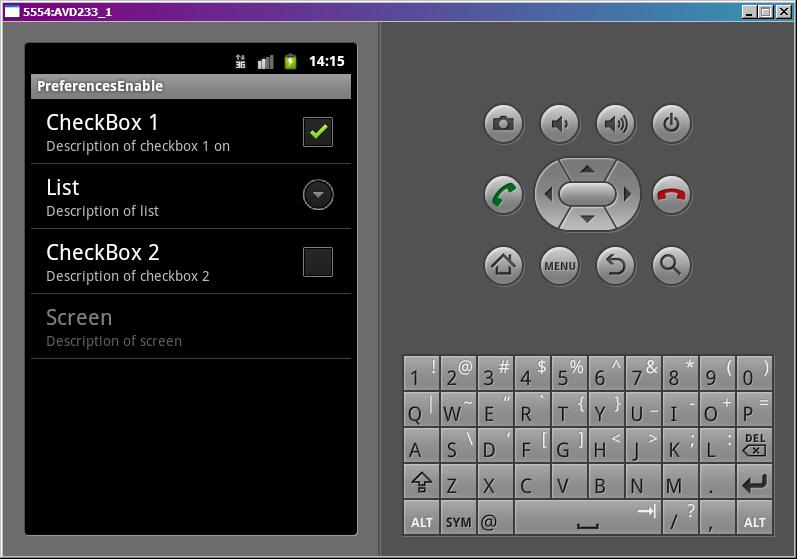
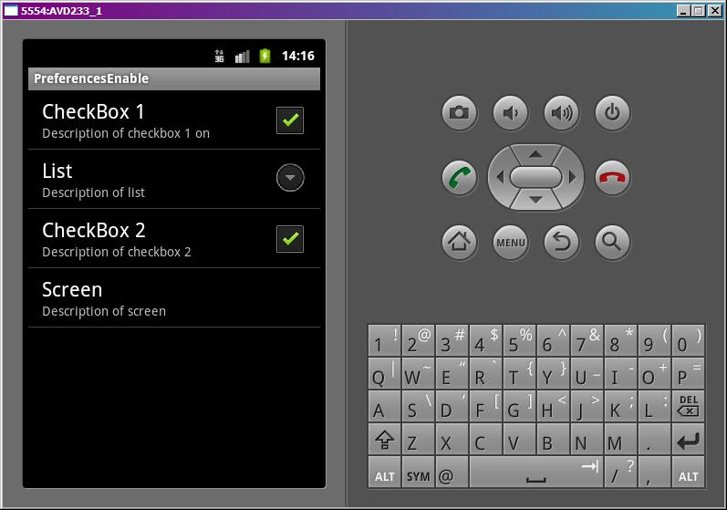
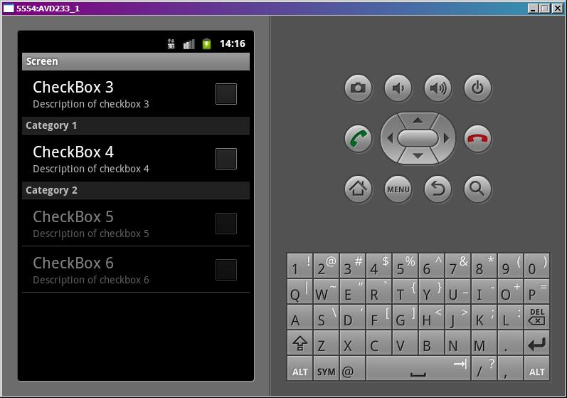
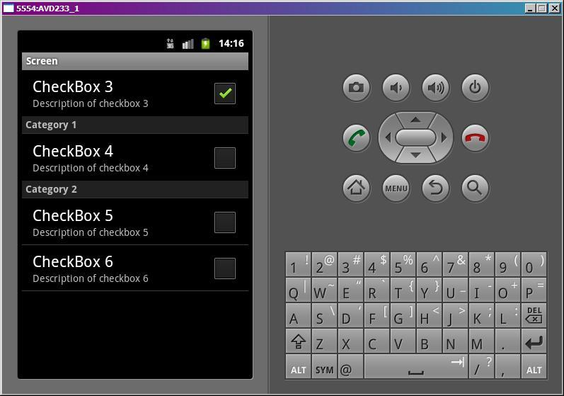

В этом уроке:
- управляем активностью настроек (setEnabled)
Иногда в настройках можно наблюдать, как некоторые из них неактивны - с ними нельзя взаимодействовать. Причем это зависит от смежных настроек. Т.е. выключили одну галку - стала неактивна другая. Разберемся, как это делается.
Создадим проект:
Project name: P0731_PreferencesEnable
Build Target: Android 4.0
Application name: PreferencesEnable
Package name: ru.startandroid.develop.p0731preferencesenable
Create Activity: MainActivity
Заполним strings.xml:
<?xml version="1.0" encoding="utf-8"?>
<resources>
<string name="hello">Hello World, MainActivity!</string>
<string name="app_name">PreferencesEnable</string>
<string-array name="entries">
<item>one</item>
<item>two</item>
<item>three</item>
</string-array>
<string-array name="entry_values">
<item>1</item>
<item>2</item>
<item>3</item>
</string-array>
</resources>Это два массива для списка ListPreference.
Создадим xml файл настроек, res/xml/pref.xml:
<?xml version="1.0" encoding="utf-8"?>
<PreferenceScreen
xmlns:android="http://schemas.android.com/apk/res/android">
<CheckBoxPreference
android:key="chb1"
android:summaryOff="Description of checkbox 1 off"
android:summaryOn="Description of checkbox 1 on"
android:title="CheckBox 1">
</CheckBoxPreference>
<ListPreference
android:dependency="chb1"
android:entries="@array/entries"
android:entryValues="@array/entry_values"
android:key="list"
android:summary="Description of list"
android:title="List">
</ListPreference>
<CheckBoxPreference
android:key="chb2"
android:summary="Description of checkbox 2"
android:title="CheckBox 2">
</CheckBoxPreference>
<PreferenceScreen
android:dependency="chb2"
android:key="screen"
android:summary="Description of screen"
android:title="Screen">
<CheckBoxPreference
android:key="chb3"
android:summary="Description of checkbox 3"
android:title="CheckBox 3">
</CheckBoxPreference>
<PreferenceCategory
android:key="categ1"
android:summary="Description of category 1"
android:title="Category 1">
<CheckBoxPreference
android:key="chb4"
android:summary="Description of checkbox 4"
android:title="CheckBox 4">
</CheckBoxPreference>
</PreferenceCategory>
<PreferenceCategory
android:key="categ2"
android:summary="Description of category 2"
android:title="Category 2">
<CheckBoxPreference
android:key="chb5"
android:summary="Description of checkbox 5"
android:title="CheckBox 5">
</CheckBoxPreference>
<CheckBoxPreference
android:key="chb6"
android:summary="Description of checkbox 6"
android:title="CheckBox 6">
</CheckBoxPreference>
</PreferenceCategory>
</PreferenceScreen>
</PreferenceScreen>Нас интересует атрибут dependency. В нем можно указать key какого-либо CheckBoxPreference - и по включению/выключения чекбокса будет активна/неактивна настройка. Т.е. например мы для ListPreference c key = list указали dependency = chb1. И теперь включая/выключая chb1 будет меняться активность list. Этот механизм работает с обычными настройками и с PreferenceScreen, а с PreferenceCategory – нет. Для категорий придется то же самое написать.
Еще обратите внимание на атрибуты summaryOn и summaryOff у chb1. Это тексты-описания настройки, аналогично summary. Они отображаются в зависимости от того включен (summaryOn) чекбокс или выключен (summaryOff).
Создаем экран настроек, PrefActivity.java:
package ru.startandroid.develop.p0731preferencesenable;
import android.os.Bundle;
import android.preference.CheckBoxPreference;
import android.preference.Preference;
import android.preference.Preference.OnPreferenceClickListener;
import android.preference.PreferenceActivity;
import android.preference.PreferenceCategory;
public class PrefActivity extends PreferenceActivity {
CheckBoxPreference chb3;
PreferenceCategory categ2;
@Override
protected void onCreate(Bundle savedInstanceState) {
super.onCreate(savedInstanceState);
addPreferencesFromResource(R.xml.pref);
chb3 = (CheckBoxPreference) findPreference("chb3");
categ2 = (PreferenceCategory) findPreference("categ2");
categ2.setEnabled(chb3.isChecked());
chb3.setOnPreferenceClickListener(new OnPreferenceClickListener() {
public boolean onPreferenceClick(Preference preference) {
categ2.setEnabled(chb3.isChecked());
return false;
}
});
}
}С помощью метода findPreference мы находим на экране чекбокс (chb3) и категорию (categ2). И методом setEnabled устанавливаем, что активность категории равна значению чекбокса (вкл/выкл). Это, чтобы при старте экрана все было верно.
Далее для чекбокса прописываем обработчик и в нем по нажатию устанавливаем связь - активность категории равна значению чекбокса.
В MainActivity.java только создаем пункт меню для перехода к настройкам:
package ru.startandroid.develop.p0731preferencesenable;
import android.app.Activity;
import android.content.Intent;
import android.os.Bundle;
import android.view.Menu;
import android.view.MenuItem;
public class MainActivity extends Activity {
/** Called when the activity is first created. */
public void onCreate(Bundle savedInstanceState) {
super.onCreate(savedInstanceState);
setContentView(R.layout.main);
}
public boolean onCreateOptionsMenu(Menu menu) {
MenuItem mi = menu.add(0, 1, 0, "Preferences");
mi.setIntent(new Intent(this, PrefActivity.class));
return super.onCreateOptionsMenu(menu);
}
}Все сохраняем и запускаем приложение. Переходим к настройкам.

CheckBox 1 выключен, соответственно неактивен и List. Также CheckBox 2 выключен, неактивен Screen. Это мы прописывали в атрибутах dependency в pref.xml.
Включим CheckBox 1:

List теперь активен. И обратите внимание, что поменялось описание CheckBox 1. Пока чекбокс был выключен, отображался текст из атрибута summaryOff, а теперь он включен и мы видим текст из summaryOn.
Давайте включим CheckBox2.

Screen теперь активен.
Нажимаем на него и проваливаемся внутрь.

Напомню в коде мы прописывали, что Category 2 зависела от CheckBox 3. И действительно – чекбокс выключен и категория не активна.
Включим чекбокс

Категория стала активна. Все ок.
На этом уроке немного посмотрели, как через код работать с экраном настроек. Думаю, имеет смысл рассмотреть это более подробно.